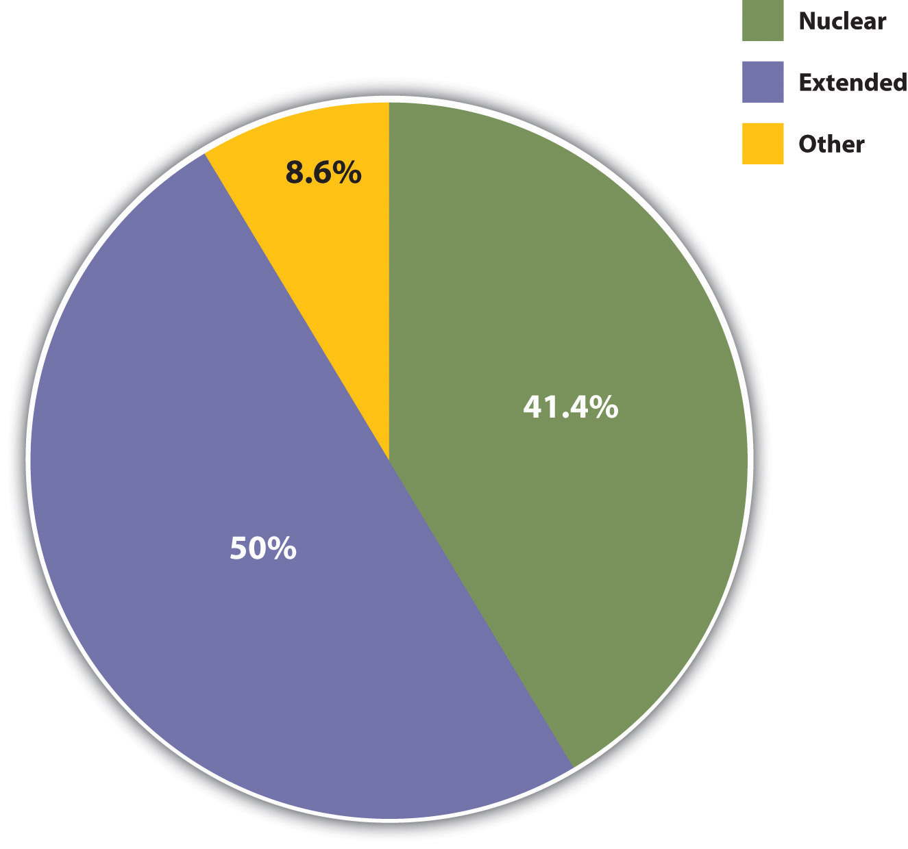

A familyA group of two or more people who are related by blood, marriage, adoption, or a mutual commitment and who care for one another. is a group of two or more people who are related by blood, marriage, adoption, or a mutual commitment and who care for one another. Defined in this way, the family is universal or nearly universal: some form of the family has existed in every society, or nearly every society, that we know about (Starbuck, 2010).Starbuck, G. H. (2010). Families in context (2nd ed.). Boulder, CO: Paradigm. Yet it is also true that many types of families have existed, and the cross-cultural and historical record indicates that these different forms of the family can all “work”: they provide practical and emotional support for their members and they socialize their children.
It is important to keep this last statement in mind, because Americans until recently thought of only one type of family when they thought of the family at all, and that is the nuclear familyA family composed of two parents and their children living in the same household.: a married heterosexual couple and their young children living by themselves under one roof. The nuclear family has existed in most societies with which scholars are familiar, and several of the other family types we will discuss stem from a nuclear family. Extended familiesA family in which parents, children, and other relatives live in the same household., for example, which consist of parents, their children, and other relatives, have a nuclear family at their core and were quite common in the preindustrial societies studied by George Murdock (Murdock & White, 1969)Murdock, G. P., & White, D. R. (1969). Standard cross-cultural sample. Ethnology, 8, 329–369. that make up the Standard Cross-Cultural Sample (see Figure 15.1 "Types of Families in Preindustrial Societies").
Figure 15.1 Types of Families in Preindustrial Societies
The nuclear family that was so popular on television shows during the 1950s remains common today but is certainly less common than during that decade.
Source: Data from Standard Cross-Cultural Sample.
Similarly, many one-parent families begin as (two-parent) nuclear families that dissolve upon divorce/separation or, more rarely, the death of one of the parents. In recent decades, one-parent families have become more common in the United States because of divorce and births out of wedlock, but they were actually very common throughout most of human history because many spouses died early in life and because many babies were born out of wedlock. We return to this theme shortly.
When Americans think of the family, they also think of a monogamous family. Monogamy refers to a marriage in which one man and one woman are married only to each other. That is certainly the most common type of marriage in the United States and other Western societies, but in some societies polygamy—the marriage of one person to two or more people at a time—is more common. In the societies where polygamy has prevailed, it has been much more common for one man to have many wives (polygyny) than for one woman to have many husbands (polyandry).
The selection of spouses also differs across societies but also to some degree within societies. The United States and many other societies primarily practice endogamyMarriage within a social category or group, including race, ethnicity, social class, and religion., in which marriage occurs within one’s own social category or social group: people marry others of the same race, same religion, same social class, and so forth. Endogamy helps reinforce the social status of the two people marrying and to pass it on to any children they may have. Consciously or not, people tend to select spouses and mates (boyfriends or girlfriends) who resemble them not only in race, social class, and other aspects of their social backgrounds but also in appearance. As Chapter 1 "Sociology and the Sociological Perspective" pointed out, attractive people marry attractive people, ordinary-looking people marry ordinary-looking people, and those of us in between marry other in-betweeners. This tendency to choose and marry mates who resemble us in all of these ways is called homogamy.
Some societies and individuals within societies practice exogamyMarriage between social categories or groups., in which marriage occurs across social categories or social groups. Historically exogamy has helped strengthen alliances among villages or even whole nations, when we think of the royalty of Europe, but it can also lead to difficulties. Sometimes these difficulties are humorous, and some of filmdom’s best romantic comedies involve romances between people of very different backgrounds. As Shakespeare’s great tragedy Romeo and Juliet reminds us, however, sometimes exogamous romances and marriages can provoke hostility among friends and relatives of the couple and even among complete strangers. Racial intermarriages, for example, are exogamous marriages, and in the United States they often continue to evoke strong feelings and were even illegal in some states until a 1967 Supreme Court decision (Loving v. Virginia, 388 U.S. 1) overturned laws prohibiting them.
Families also differ in how they trace their descent and in how children inherit wealth from their parents. Bilateral descent prevails in the United States and many other Western societies: we consider ourselves related to people on both parents’ sides of the family, and our parents pass along their wealth, meager or ample, to their children. In some societies, though, descent and inheritance are patrilinealInheritance through the male line. (children are thought to be related only to their father’s relatives, and wealth is passed down only to sons), while in others they are matrilinealInheritance through the female line. (children are thought to be related only to their mother’s relatives, and wealth is passed down only to daughters).
Another way in which families differ is in their patterns of authority. In patriarchal familiesA family where the husband and father holds the main authority in the household., fathers are the major authority figure in the family (just as in patriarchal societies men have power over women; see Chapter 11 "Gender and Gender Inequality"). Patriarchal families and societies have been very common. In matriarchal familiesA family where the wife and mother holds the main authority in the household., mothers are the family’s major authority figure. Although this type of family exists on an individual basis, no known society has had matriarchal families as its primary family type. In egalitarian familiesA family where both spouses share authority equally., fathers and mothers share authority equally. Although this type of family has become more common in the United States and other Western societies, patriarchal families are still more common.
Now that we are familiar with the basic types of family structures and patterns, let’s take a quick look at the cross-cultural and historical development of the family. We will start with the family in preindustrial times, drawing on research by anthropologists and other scholars, and then move on to the development of the family in Western societies.
People in hunting-and-gathering societies probably lived in small groups composed of two or three nuclear families. These groupings helped ensure that enough food would be found for everyone to eat. While men tended to hunt and women tended to gather food and take care of the children, both sexes’ activities were considered fairly equally important for a family’s survival. In horticultural and pastoral societies, food was more abundant, and families’ wealth depended on the size of their herds. Because men were more involved than women in herding, they acquired more authority in the family, and the family became more patriarchal than previously (Quale, 1992).Quale, G. R. (1992). Families in context: A world history of population. New York, NY: Greenwood Press. Still, as Chapter 13 "Work and the Economy" indicated, the family continued to be the primary economic unit of society until industrialization.
Although many preindustrial societies featured nuclear families, a few societies studied by anthropologists have not had them. One of these was the Nayar in southwestern India, who lacked marriage and the nuclear family. A woman would have several sexual partners during her lifetime, but any man with whom she had children had no responsibilities toward them. Despite the absence of a father, this type of family arrangement seems to have worked well for the Nayar (Fuller, 1976).Fuller, C. J. (1976). The Nayars today. Cambridge, England: Cambridge University Press. Nuclear families are also mostly absent among many people in the West Indies. When a woman and man have a child, the mother takes care of the child almost entirely; the father provides for the household but usually lives elsewhere. As with the Nayar, this fatherless arrangement seems to have worked well in the parts of the West Indies where it is practiced (Smith, 1996).Smith, R. T. (1996). The matrifocal family: Power, pluralism and politics. New York, NY: Routledge.
A more contemporary setting in which the nuclear family is largely absent is the Israeli kibbutz, a cooperative agricultural community where all property is collectively owned. In the early years of the kibbutzim (plural of kibbutz), married couples worked for the whole kibbutz and not just for themselves. Kibbutz members would eat together and not as separate families. Children lived in dormitories from infancy on and were raised by nurses and teachers, although they were able to spend a fair amount of time with their birth parents. The children in a particular kibbutz grew up thinking of each other as siblings and thus tended to fall in love with people from outside the kibbutz (Garber-Talmon, 1972).Garber-Talmon, Y. (1972). Family and community in the kibbutz. Cambridge, MA: Harvard University Press. Although the traditional family has assumed more importance in kibbutz life in recent years, extended families continue to be very important, with different generations of a particular family having daily contact (Lavee, Katz, & Ben-Dror, 2004).Lavee, Y., Katz, R., & Ben-Dror, T. (2004). Parent-child relationships in childhood and adulthood and their effect on marital quality: A comparison of children who remained in close proximity to their parents and those who moved away. Marriage & Family Review, 36(3/4), 95–113.
These examples do not invalidate the fact that nuclear families are almost universal and important for several reasons we explore shortly. But they do indicate that the functions of the nuclear family can be achieved through other family arrangements. If that is true, perhaps the oft-cited concern over the “breakdown” of the 1950s-style nuclear family in modern America is at least somewhat undeserved. As indicated by the examples just given, children can and do thrive without two parents. To say this is meant neither to extol divorce, births out of wedlock, and fatherless families nor to minimize the problems they may involve. Rather, it is meant simply to indicate that the nuclear family is not the only viable form of family organization (Eshleman & Bulcroft, 2010).Eshleman, J. R., & Bulcroft, R. A. (2010). The family (12th ed.). Boston, MA: Allyn & Bacon.
In fact, although nuclear families remain the norm in most societies, in practice they are something of a historical rarity: many spouses used to die by their mid-40s, and many babies were born out of wedlock. In medieval Europe, for example, people died early from disease, malnutrition, and other problems. One consequence of early mortality was that many children could expect to outlive at least one of their parents and thus essentially were raised in one-parent families or in stepfamilies (Gottlieb, 1993).Gottlieb, B. (1993). The family in the Western world from the Black Death to the industrial age. New York, NY: Oxford University Press.
Moving quite a bit forward in history, different family types abounded in the colonial period in what later became the United States, and the nuclear family was by no means the only type. Nomadic Native American groups had relatively small nuclear families, while nonnomadic groups had larger extended families; in either type of society, though, “a much larger network of marital alliances and kin obligations [meant that]…no single family was forced to go it alone” (Coontz, 1995, p. 11).Coontz, S. (1995, Summer). The way we weren’t: The myth and reality of the “traditional” family. National Forum: The Phi Kappa Phi Journal, 11–14. Nuclear families among African Americans slaves were very difficult to achieve, and slaves adapted by developing extended families, adopting orphans, and taking in other people not related by blood or marriage. Many European parents of colonial children died because average life expectancy was only 45 years. The one-third to one-half of children who outlived at least one of their parents lived in stepfamilies or with just their surviving parent. Mothers were so busy working the land and doing other tasks that they devoted relatively little time to child care, which instead was entrusted to older children or servants.
During industrialization, people began to move into cities to be near factories. A new division of labor emerged in many families: men worked in factories and elsewhere outside the home, while many women stayed at home to take care of children and do housework, including the production of clothing, bread, and other necessities, for which they were paid nothing (Gottlieb, 1993).Gottlieb, B. (1993). The family in the Western world from the Black Death to the industrial age. New York, NY: Oxford University Press. For this reason, men’s incomes increased their patriarchal hold over their families. In some families, however, women continued to work outside the home. Economic necessity dictated this: because families now had to buy much of their food and other products instead of producing them themselves, the standard of living actually declined for many families.
But even when women did work outside the home, men out-earned them because of discriminatory pay scales and brought more money into the family, again reinforcing their patriarchal hold. Over time, moreover, work outside the home came to be seen primarily as men’s work, and keeping house and raising children came to be seen primarily as women’s work. As Coontz (1997, pp. 55–56)Coontz, S. (1997). The way we really are: Coming to terms with America’s changing families. New York, NY: Basic Books. summarizes this development,
The resulting identification of masculinity with economic activities and femininity with nurturing care, now often seen as the “natural” way of organizing the nuclear family, was in fact a historical product of this 19th-century transition from an agricultural household economy to an industrial wage economy.
This marital division of labor began to change during the early 20th century. Many women entered the workforce in the 1920s because of a growing number of office jobs, and the Great Depression of the 1930s led even more women to work outside the home. During the 1940s, a shortage of men in shipyards, factories, and other workplaces because of World War II led to a national call for women to join the labor force to support the war effort and the national economy. They did so in large numbers, and many continued to work after the war ended. But as men came home from Europe and Japan, books, magazines, and newspapers exhorted women to have babies, and babies they did have: people got married at younger ages and the birth rate soared, resulting in the now famous baby boom generation. Meanwhile, divorce rates dropped. The national economy thrived as auto and other factory jobs multiplied, and many families for the first time could dream of owning their own homes. Suburbs sprang up, and many families moved to them. Many families during the 1950s did indeed fit the Leave It to Beaver model of the breadwinner-homemaker suburban nuclear family. Following the Depression of the 1930s and the war of the 1940s, the 1950s seemed an almost idyllic decade.
The Women in Military Service for America Memorial at the Arlington National Cemetery honors the service of women in the U.S. military. During World War II, many women served in the military, and many other women joined the labor force to support the war effort and the national economy.
Source: Photo courtesy of Rudi Williams, U.S. Department of Defense, http://www.defense.gov/news/newsarticle.aspx?id=45081.
Even so, less than 60% of American children during the 1950s lived in breadwinner-homemaker nuclear families. Moreover, many lived in poverty, as the poverty rate then was almost twice as high as it is today. Teenage pregnancy rates were about twice as high as today, even if most pregnant teens were already married or decided to get married because of the pregnancy. Although not publicized back then, alcoholism and violence in families were common. Historians have found that many women in this era were unhappy with their homemaker roles, Mrs. Cleaver (Beaver’s mother) to the contrary, suffering from what Betty Friedan (1963)Friedan, B. (1963). The feminine mystique. New York, NY: W. W. Norton. famously called the “feminine mystique.”
In the 1970s, the economy finally worsened. Home prices and college tuition soared much faster than family incomes, and women began to enter the labor force as much out of economic necessity as out of simple desire for fulfillment. As Chapter 13 "Work and the Economy" noted, more than 60% of married women with children under 6 years of age are now in the labor force, compared to less than 19% in 1960. Working mothers are no longer a rarity.
In sum, the cross-cultural and historical record shows that many types of families and family arrangements have existed. Two themes relevant to contemporary life emerge from our review of this record. First, although nuclear families and extended families with a nuclear core have dominated social life, many children throughout history have not lived in nuclear families because of the death of a parent, divorce, or birth out of wedlock. The few societies that have not featured nuclear families seem to have succeeded in socializing their children and in accomplishing the other functions that nuclear families serve. In the United States, the nuclear family has historically been the norm, but, again, many children have been raised in stepfamilies or by one parent.
Second, the nuclear family model popularized in the 1950s, in which the male was the breadwinner and the female the homemaker, must be considered a blip in U.S. history rather than a long-term model. At least up to the beginning of industrialization and, for many families, after industrialization, women as well as men worked to sustain the family. Breadwinner-homemaker families did increase during the 1950s and have decreased since, but their appearance during that decade was more of a historical aberration than a historical norm. As Coontz (1995, p. 11)Coontz, S. (1995, Summer). The way we weren’t: The myth and reality of the “traditional” family. National Forum: The Phi Kappa Phi Journal, 11–14. summarized the U.S. historical record, “American families always have been diverse, and the male breadwinner-female homemaker, nuclear ideal that most people associate with ‘the’ traditional family has predominated for only a small portion of our history.” Commenting specifically on the 1950s, sociologist Arlene Skolnick (1991, pp. 51–52)Skolnick, A. (1991). Embattled paradise: The American family in an age of uncertainty. New York, NY: Basic Books. similarly observed, “Far from being the last era of family normality from which current trends are a deviation, it is the family patterns of the 1950s that are deviant.”